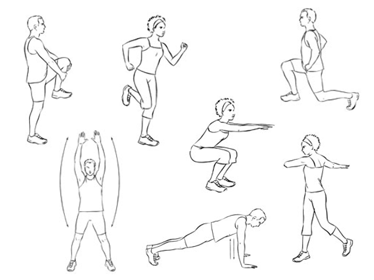
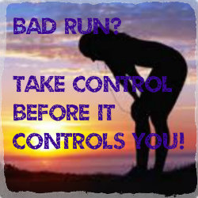
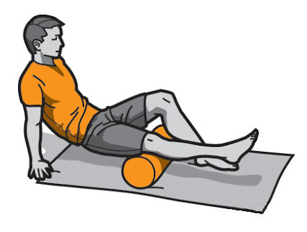
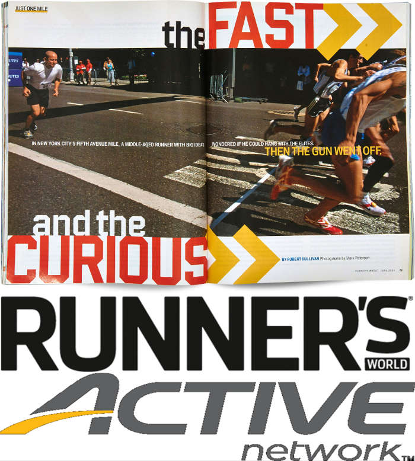
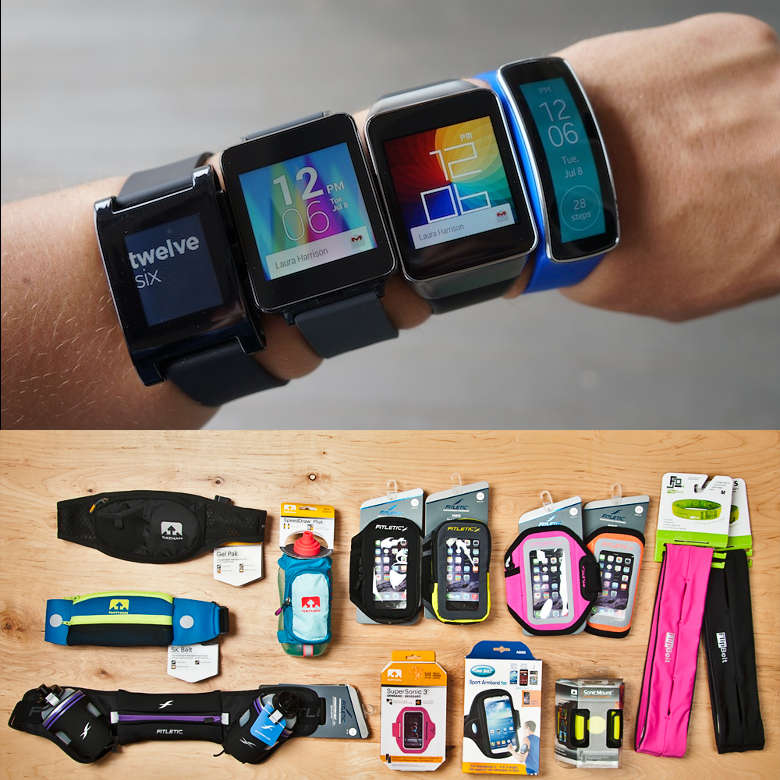
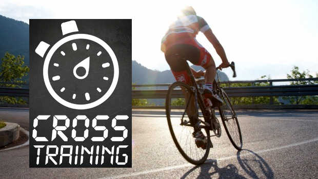
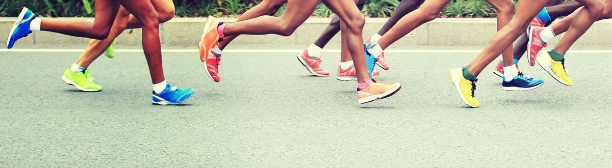

I started running in late January 2016. Back then I could hardly run 1 to 2km at an extremely sluggish pace with JayZ blaring into my ear. My goal was just to get in shape and be fit. A few months later I could see myself becoming stronger, more fit and improving my pace, so I collated my learnings and wrote a piece all about running for beginners. Fast forward a few more months running has become an intergral part of my routine, an almost meditative experience, a wonderful hobby and a healthy obsession. I came to realize that running not only helps in building fitness, it also improved my self confidence, endurance levels & taught me to push myself to aim higher. I've fallen down (figuratively), picked myself up and started again. I've run several 10K's with a best of 22 minute 5K, a 50 minute 10K run and currently training to run a half marathon later this year, all in 4 months! Here are some more things I've learnt which could be useful for becoming an even better runner and help you in getting the most out of your running workouts.

♦ Warmup and cooldown - Experts agree that a good warmup is essential to avoid risk of injury. It allows your muscles, bones, and joints to loosen up. It should gradually and gently brings up your heart rate which makes it easier to get into the rhythm to sustain the run. For my warmup I walk about a km with a gradually increasing pace and before I start my run I do some simple exercises from neck, shoulders, hip, ankle, knee rotation followed by a few strides and dynamic stretches for calves, hamstrings and adductors. Do each workout with some skipping and static running movements to increase heart rate and start blood flow to your legs. Similarly the purpose of a cool-down is to bring your body back to a normal state efficiently. Slowing your heart rate gently and continuously gives your veins time to constrict and your blood pressure time to drop, preventing "pooling" of blood in the extremities. My cool down routine is almost the same as my warmup but at much lower intensity minus the static running.

♦ Don't put much thought into a bad run - Everyone who has run long enough, from pro runners I've spoken with, to beginners, has had it happen to them - the strange, uncomfortable and troubling feeling or seering pain everywhere. What I have realized is that, almost always the physical symptoms are transient and relatively harmless. What lingers far beyond the physical effects of the bad run is the mental consequences. The reasons to be caught in a bad run could range from bad weather (hot or cold or humid), or perhaps you didn't get enough sleep, ate inadequetely or an ill timed meal, or you just feel sick. Don't fret about the bad run. Remember you cannot expect every run to be a "good" one - we are humans not machines and it's part of life. I always tell myself that it is the bad and average runs that facilitate the good one!

♦ Foam roll and exercise - Usual training plans have alternate day runs with a rest day in the middle. The rest day helps you nurse your muscles and recover. Use this time to do some core strengthening exercises to improve overall body strength. Core muscles include the postural muscles, which includes the muscles of the back, stomach, and hips. I do a planks (with variations), few variations of crunches and a few yoga exercises. Also I use this day to improve my lung capacity and practice some belly breathing to engage my diaphragm and try to practice a breathing pattern with nose and mouth. I have been trying the 3:2 rhythmic breathing pattern as suggested by Budd Coates (Breathe and count as in-2-3 and out-2). Lastly, use a foam roller to massage your connective tissues that allows for movement and target trigger points that hurt when you run.

♦ Keep reading & find new ways to improve - Running has come a long way since the early days and scientific understanding about running has improved. There is a deluge of terms runners talk about that influence your running. Trainers have an idea of what works but for self training hobbists like me, understanding your body and the right way to run helps. Terms like (a) VO2 max - maximal aerobic capacity, (b) Cadence - turn over rate of your legs, (c) Running Economy - the measure of how much energy you burn to run at a given pace, are few examples of terms you should familiarize yourself with. What also helps, is knowing the right muscles in your leg when you want to relieve yourself of a pinch or simply find the right stretching exercises for those muscles. Runner's World always has fascinating articles and inspiring stories of runners. Keep a tab on it this site, the articles are usually short and informative.

♦ Invest in your running, not accessories - I've written before that it's good to track your run, keep a log of your achievements and for that there is a deluge of smartphone apps and wearables. In hindsight, I want to add that put in some miles and footfalls before you go about shopping for expensive gadgets, earphones, accessories, bands etc. I've known folks who started their running from amazon / flipkart (wink) but gave up running altogether in a few weeks. Learn what works and what you can retro-fit. Do you really want those bluetooth earphones as opposed to some quiet time or that fancy arm band which you can replace with a sock as a comfortable, sweat soaking, non-plastic armband? Again it's personal preference, no-harm no-foul. Shop minimally and stick to your run schedule or training plan. You can always go back if you want to buy anything else.

♦ Cross training - Alternative forms of exercise that use other muscles improves your fitness and makes you more resistant to injury. Approach cross-training as a runner. Runners neglect upper bodies and have poor flexibility. Swimming, Cycling or even brisk walking are supposed to be good cross training workouts. Keep the cross training intensity to about 70% of your running workout for best results and incorporate cross training once in two weeks.
 ♦ Avoid the "go out hard and fade" - Speaking with my other novice friends, I realized most beginners like me, make the mistake of going all out in the first part of the run and then fading out later. Do negative splits instead, it will improve your range and help you run faster. Learning to pace yourself is an essential skill for runners. Don't rely too much on your GPS watch, use your breathing rhythm to feel the pace. Lock onto your goal pace for the workout and monitor whether you begin to breathe faster or you change your breathing rhythm to identify when you accidentally speed up or slow down. Practice with cutdown runs and alternating tempos. Be Patient, this learning curve is steep and necessary to pass.
♦ Avoid the "go out hard and fade" - Speaking with my other novice friends, I realized most beginners like me, make the mistake of going all out in the first part of the run and then fading out later. Do negative splits instead, it will improve your range and help you run faster. Learning to pace yourself is an essential skill for runners. Don't rely too much on your GPS watch, use your breathing rhythm to feel the pace. Lock onto your goal pace for the workout and monitor whether you begin to breathe faster or you change your breathing rhythm to identify when you accidentally speed up or slow down. Practice with cutdown runs and alternating tempos. Be Patient, this learning curve is steep and necessary to pass.
♦ Everyone has a story! What's yours? - Once you pull through the initial phase, once you find running pleasurable you will turn to something to make you stronger and keep you going! Remember why you started, hold on to it because that's your story? For me personally it's about seeing the worlds best and picturesque places on my feet. I want to finish these scenic trail marathons - Great Wall marathon China, Great Ocean Road marathon Australia, Big Sur marathon, Inca Trail Marathon Machu Picchu and some famous city marathons - Boston, London. I'll continue to maintain my story with my photo running diary.
← Back to Blogs
All about Running - Part 2
Getting the most out of your runs - Running Technique, Strength Training, Running farther faster
adarshpatil
31st May 2016

Long may you run!
Comments (2)
Vimok G
May 31, 2016
Awesome! Thanks for writing part 2. I've wanted to comment on your first part as well. Your earlier blog inspired me to start running and so far I've enojoyed running too. Lots of information in this one as well for me to act on!